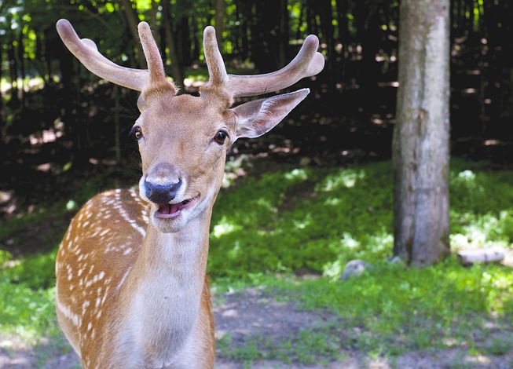
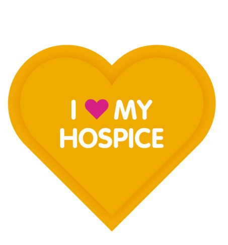
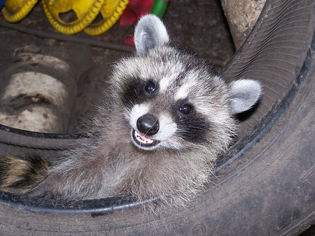

Roadkill Hospice Advocacy

A totally legit tax-sheltering non-profit
When someone you love gets hit by a moving vehicle, you expect them to receive top-notch medical attention ASAP. No matter the deductible! No matter the copay! When it comes to family, you pay whatever it takes (even though he/she most likely wasn’t paying the slightest attention to their surroundings). At Roadkill Hospice Advocacy, we believe that animals are people too! We acknowledge that running over animals is both a right and a privilege, however there is an alternative to leaving our dead furry mammal friends on the road. Can you guess what it is?
That’s right!
Hospice care is the logical choice--both morally and financially--for roadkill. With baby boomers reaching their 60s and 70s, the demand for hospice care will soon be at an all-time high. Although losing your elderly loved ones might provide a short-term emotional sting, a booming hospice industry will lead to broader and cheaper access for all species. Overall, this is a true home run!
  